farmbox
A mobile app that allows consumers to locate, evaluate and sign up for CSA (Community Supported Agriculture) programs near to them while tracking box contents, recipes, meal plans and more.
View Mobile PrototypeIntroduction
summary
Community Supported Agriculture, or CSA, is a system that connects the producer and consumers within the food system more closely by allowing the consumer to subscribe to the harvest of a certain farm or group of farms.
Farmbox is a simple-to-use mobile app that allows consumers to easily locate, evaluate and sign up for CSA options near to a specified location, while also encouraging retention after joining.
See: Mobile Prototype
My role: UX Research, UX Design, Visual Design, Branding.
Deliverables: Key Requirements, User Surveys, Competitive Analysis, User Personas, User Stories, User Flows, Wireframes, Usability Testing, High Fidelity Mock Ups, Prototype, Journey maps.
Tools Used: Figma, Photoshop, Illustrator, InVision, UsabilityHub, Draw.io, Pen & Paper.
The Problem
Not only is there very little awareness about CSA’s in the general population, but even for people who are aware, there are very few centralized resources of information about ALL the CSA options available in a particular area.
Further, there are many common frustrations that CSA users indicate are a barrier to retention, frustrations that could potentially be alleviated through the use of an app.
The main frustration reported by current and former CSA members is simply not knowing what they will be receiving each week and what to do with it.
The Solution
The goal: encourage participation and retention in CSA programs!
My solution was to create a mobile app that helps users locate, evaluate and sign-upfor a CSA in their area.
Once signed up, users can easily view subscription contents for a particular week.
They also receive recipe suggestions for the items in their box and can create and save meal plans and shopping lists.
My Process
user research
In order to gain better insight into awareness, participation and frustrations among the general public, I conducted an online survey utilizing google forms.
Survey results indicated awareness of CSA programs was alarmingly low, while participation and retention were both even lower.
User Survey Insights:

More detailed analysis from my survey can be found: here
Competitive analysis
Surveying the landscape for competitors, it was challenging to find a true competitor. Three applications emerged that offered some similar functionalities. These applciations were CSAware, Farmigo and Harvie.
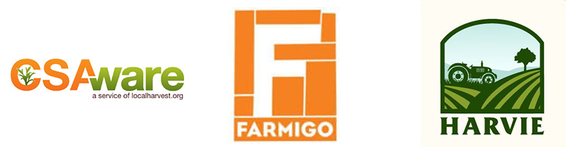
Results of my analysis:
CSAware: is a product for overall farm management that incorporates an app for customers as part of its package. It is a robust package that is aimed at farms rather than consumers, doesn’t offer a centralized locator for all CSA’s and might be expensive and overkill for a small farm.
Farmigo: like CSAware, is aimed at farms rather than consumers and is a robust farm management tool. It is not for locating and comparing CSA options and is integrated with farm management software.
Harvie: is also aimed at farms, but has a more streamlined interface than the other two competitors and doesn’t seem to involve a whole farm management solution. It does however only represent farms that are signed up with Harvie, rather than fully representing all options in the area.
More detailed analysis from my competitive and SWOT analysis can be found: here
personas
From my analysis, three types of users emerged:
- Current and former CSA participants
- People who are aware of CSA's but have never joined.
- People who are completely unaware of CSA's.
Persona #1: Jason - programmer “I just never knew what I was going to get”
Motivations -
He loves to cook, but doesn’t have a lot of free time for shopping and meal planning. He used to belong to a CSA and loved the locally sourced, fresh produce. He is very organized and likes to plan ahead.
Frustrations -
When he belonged to the CSA, he never knew what he was going to get and so never had the right ingredients to pair with what he got in his box. His kids could be picky eaters and he felt that without proper planning much of the food went to waste.
Persona #2: Katelyn - beekeeper “I just don’t need that much food”
Motivations -
Healthy eating and sustainable living] are both a huge priority for Katelyn. Though she would like for everything she consumes to be organic, she needs to be very budget conscious in shopping for food. She would like to shop locally.
Frustrations -
CSA options in her area are too expensive for her budget. The shares usually involve too much food. She hates all of the plastic packaging in the supermarket.
Persona #3: Kristin - dental hygienist “I don’t know what to cook that’s quick, healthy and easy”
Motivations -
Kristin really needs things to be convenient and quick because she doesn’t have a lot of time after work. She wants her whole family to eat healthier but finds it hard to implement.
Frustrations -
She hates that the only time she has to shop is on the weekend when the stores are busier and prices are higher. Eating healthy just seems like so much work. She grew up on processed food and doesn’t really know how to make vegetables taste good. She has three picky kids.
user stories
My personas informed the development of user stories. High priority tasks define the minimum viable product (MVP).
- As a new user I want to
- sign up for a CSA
- As a general user I want to
- find CSA’s with pick up locations near me
- As a returning user I want to
- log in to my account
- see what produce is in a particular box
- see suggested recipes based on box contents
- As a farmer/manager I want to
- add items to my inventory
- create share/box types and prices
- add inventory to weekly boxes
Full list of user stories available: here
user flows
Sketching some user flows before creating digital versions:
Farmbox "Sign-up"
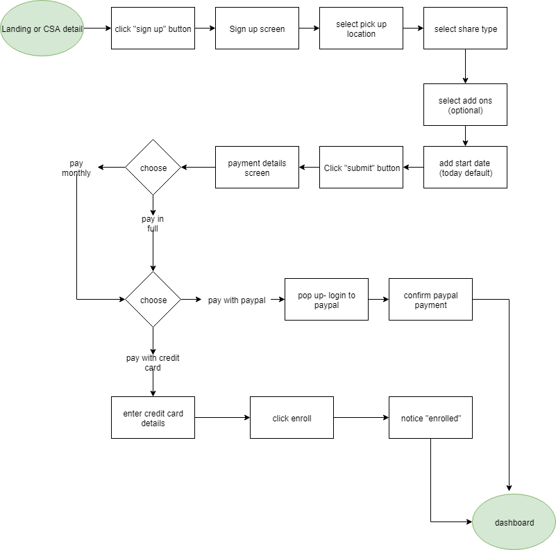
Farmbox "Find a CSA"
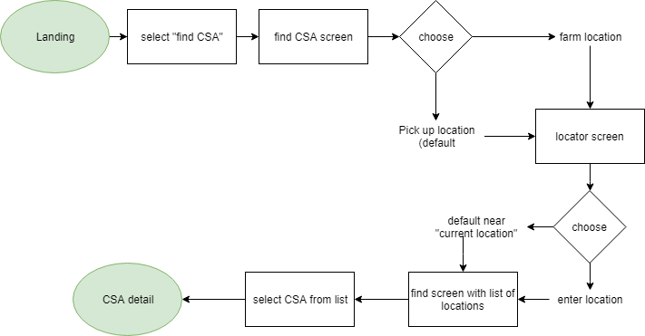
All sketches are available here: here
All digital user flows: here
These flows informed a preliminary: Content Strategy and Sitemap
wireframes
Using my content strategy document and sitemap as a guide, I began sketching wireframes for each user flow:
Early wireframe sketches: here
Sketching led to a better understanding of the information architecture-
- The dashboard contains the contents of the weekly box and the pickup location. Clicking the individual box content item leads to an item detail page, with description and suggested recipes.
- Users would be able to add recipes to their “meal plan” and the “additional” ingredients to a weekly shopping list. They can also view a recipe detail page, with a complete list of instructions.
- For my recipe ingredients, I wanted to break down the ingredients into 3 categories 1. The items from this weeks CSA. 2. Ingredients users would normally have on hand (by creating a “My Pantry” section) and 3. Additional items they might have to shop for.
This led to an early set of digital wireframes, created in Figma.
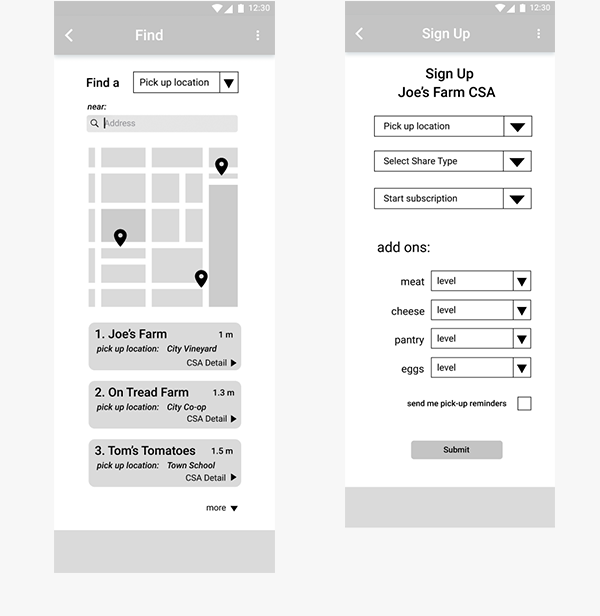 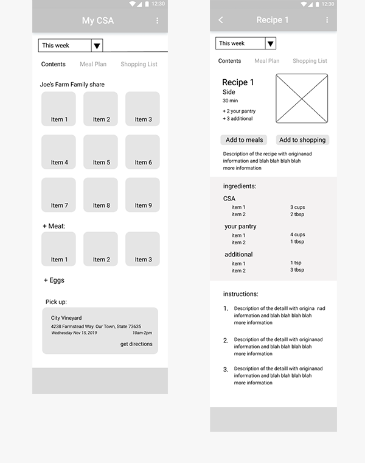
All preliminary digital wireframes: here
Testing the paper prototype
Using printouts of my wireframes, I conducted a series of early usability tests on my wireframes. These tests suggested I implement a few subtle changes moving forward;
- Make the items on the dashboard bigger and more prominent.
- I should evaluate whether drop-downs are the best solution for all of the sign-up choices.
- On the CSA detail screen, put the farm description above the sign-up button.
- Minimize choices/details in the top area of the item detail screen.
- Clarify the term "add-on."
branding
Step 1: Logo and Style
After creating a series of mind maps and word lists I settled on the name farmbox.
As there is so little awareness of what a CSA is, I wanted a name that was indicative and straightforward- not too abstract. Farmbox is just that. It is a short, straightforward way to describe what you get with a CSA membership.
The aesthetic direction for this app was driven by the target customer archetype: a modern, farmer's-market-loving, eco-conscious, foodie.
With the name settled and a good sense of the desired brand direction, I moved on to sketching for a logo:
All sketches and branding maps: here
I conducted a number of preference tests on logo variations and typography choices which led me to the final, streamlined logo and style:
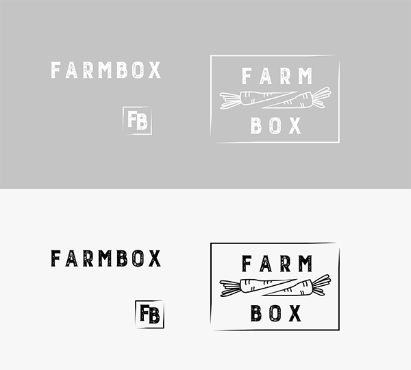
Step 2: Style Guide
My style guide details all design choices including typography, color palettes and iconography. Again, the basis of the design was to signify a fresh, urban take on rustic authenticity.
Color
For colors I wanted to avoid using green or brown as primary colors. I wanted something striking and unexpected, yet fresh and modern. I chose a palette of deep blue, magenta and pale grey. 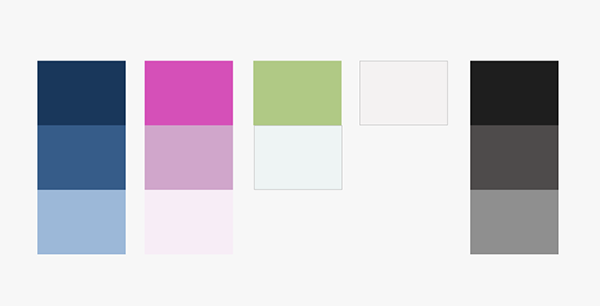
Typography
I used three complimentary fonts.
Gothic A1 is used for almost all the body text, navigation and headings. Its a versatile font with many weight options. Burford Rustic is used for the logo and page title. The Girl Next Door is used for landing page headings. 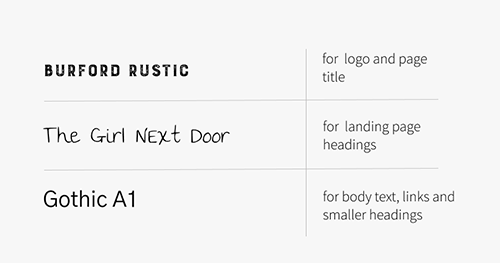
Icons and Illustration
I created a series of illustrations that emulate blue-ink line drawings of vegetables and food, reminiscent of hipster vintage book illustrations.
In order to offset the amount of text, I also created a series of icons to help my user easily identify sections of the app.
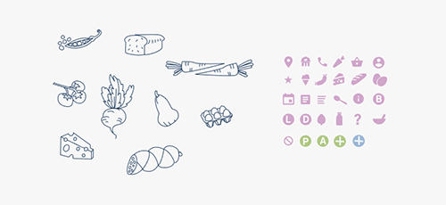
Full Style Guide: here
Mock-ups v01
Applying the principles of my style guide to my wireframes, I generated initial screen mockups.
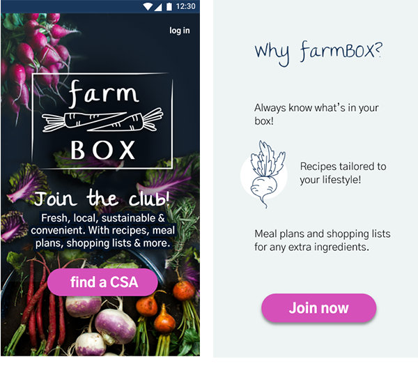 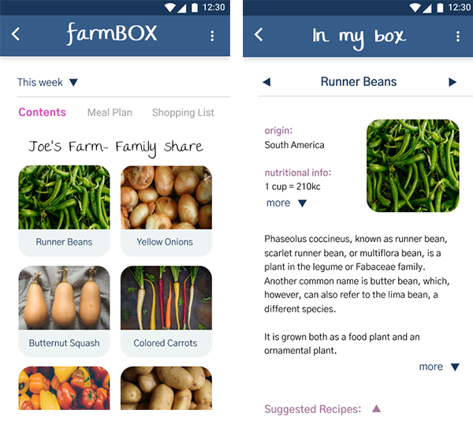
preference testing
Using usabilityhub.com and slack, I conducted a series of preference tests on my early mock-ups.
Test #1
Which is the prefered landing page design?
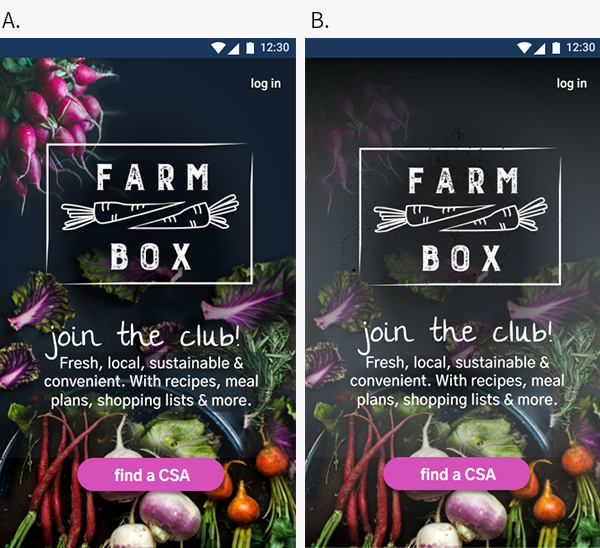
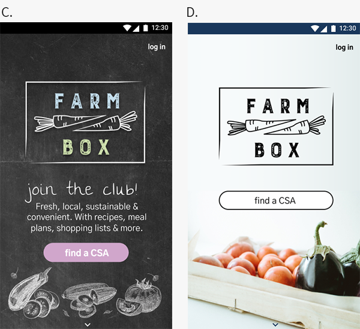
Result: The most popular choice was A, the closest to my original mock-up. Users liked the richness of the colors and the vegetable variety.
Test #2
This question arose while testing my wireframes- would users prefer drop-downs or scrolling for the sign-up screen.? 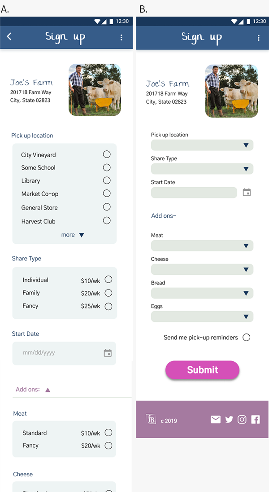
Result: Preference testing and design reviews indicated that though a lot of scrolling is not ideal, users would rather scroll than have to click on a drop-down and then click a second time to make a selection. Also immediate visibility of all options seemed preferable. So, A. was the clear preference for these tests.
Additional refinements suggested by testing:
- Make pricing information more prominent in the hierarchy on my landing page
- Make the active state more than just a different color- bold, underline…
- Refine buttons for “add to meals” and “add to shopping”
- create an intermediary pop-up for deciding which meal the add to button leads to
- Switch meals and shopping so pop-up seems to follow logical flow of language, rather than popping up behind.
Usability Testing
With these initial refinements implemented, I created a hi-fidelity inVision prototype for usability testing. Usability tests on the prototype were conducted both in person and remotely utilizing zoom.
See: V01 Prototype
The script used for testing is here
- Order of tasks tested
- Find the closest CSA to your current location
- Sign up for a CSA subscription to “Joe’s Farm” with specified parameters
- See contents of box for this week
- View runner beans
- See suggested recipes for runner beans
- View garlicky runner beans
- Add garlicky runner beans to lunch on monday
- Add ingredients to shopping list
- View meal plan
- View profile
- Log out
Results: Usability testing with the prototype indicated that I should refine my menu placement and make sure that it was more obvious how I could navigate to meal plans and shopping lists from my recipe and item detail pages. (Most participants did not know to click on the ellipsis for “more.”)
Testing also indicated that my interface was text heavy and suggested I might consider using icons to make sections more identifiable and consistent.
Usability test notes here
Full details of the design refinements based on prototype v01 testing here
Revised Mock-ups
Based on results of my usability tests and feedback from fellow designers, I revised my design to achieve a more minimal “card style” design and streamlined UI.
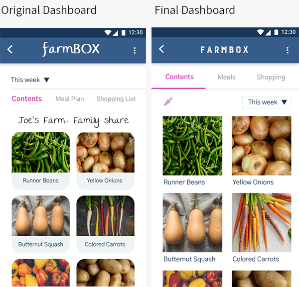I incorporated icons throughout the application in order to alleviate the cognitive overload of reading too much text
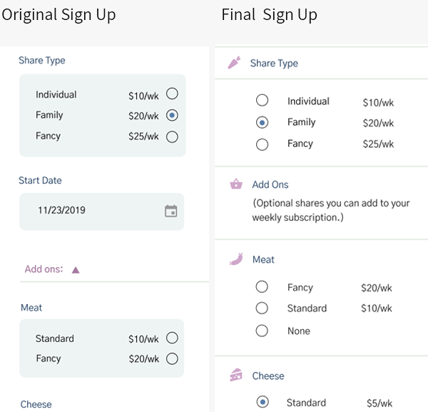Unlike the sign-up screen, where scrolling was prefered to drop-downs, on the farm detail page the amount of scrolling was not preferable, so I replaced the expanding and contracting sections with a tabbed menu that displayed all detail options directly below the basic farm information 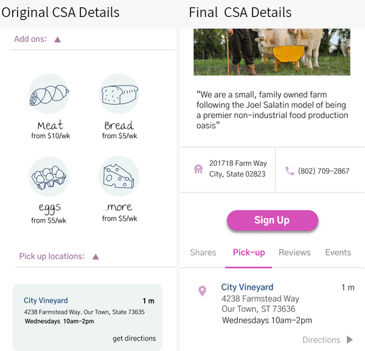
All final mock-ups here
final product
Building on all of these iterations and considerations, I reached my final design for a mobile app that encourages participation and retention in CSA programs through easy access of information, paired with recommended recipes, meal planning and shopping list features:
Final Mobile App:
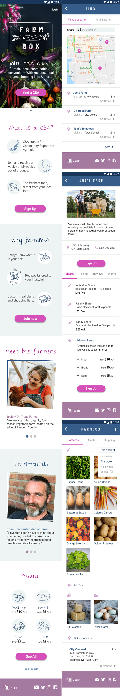
Conclusion
conclusion
Through many iterations, there were valuable lessons to be learned from this project.
Regarding CSA's:
- Very few people know what a CSA is!
- From the survey participants, most people who have joined a CSA in the past have chosen to quit! (Retention is not good)
Regarding Information and Apps:
- Even if users are sent an email with the contents, they won’t dig for that information.
- Users would seemingly rather scroll and have information/choices readily apparent than hidden behind drop-down menus.
- Users do not automativally think to look for “more” options under an ellipsis on the toolbar.
- Affordance is still sometimes helpful to remind users that they can scroll.